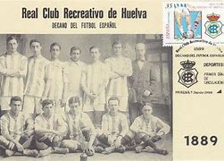
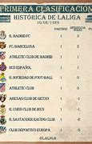

Click aqui para volver al inicio
3.Fútbol en España
El fútbol llega a España en el s.XIX más concretamente en 1872
Surge el Huelva Recreation Club, actual Real Club Recreativo de Huelva, que fue establecido el 18 de diciembre de 1889 convirtiendose en el primer equipo de fútbol de la historia de España

Posteriormente se fundara la Liga Nacional de Fútbol Profesional en 1928 proclamandose el FC Barcelona como vencedor
